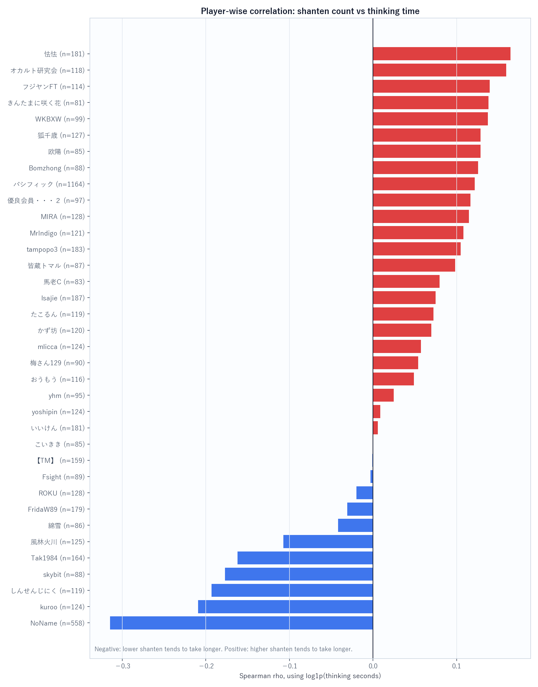
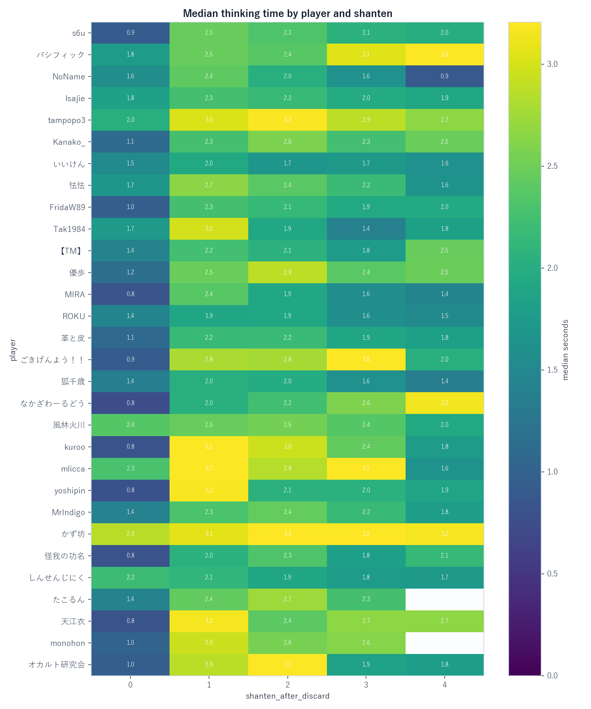
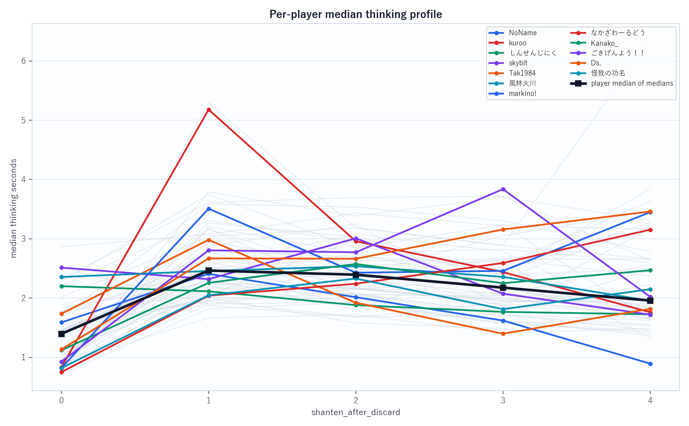
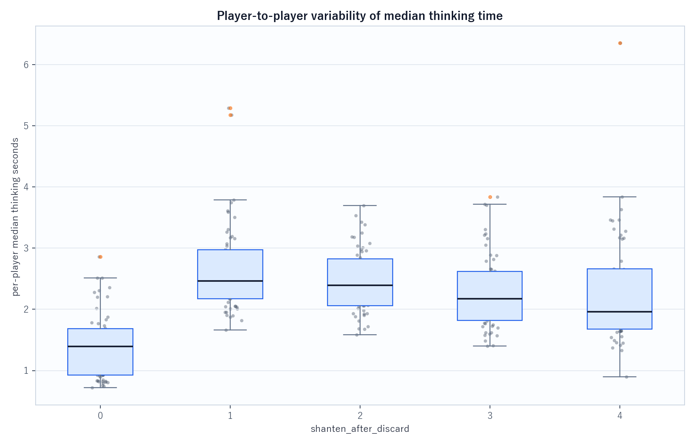
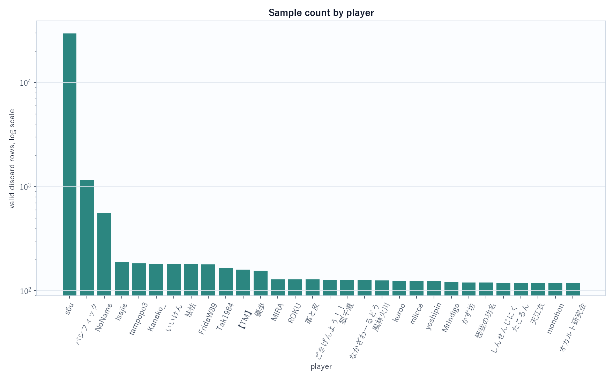

source_files=discard_fact_202604.csv, discard_fact_202605.csv / hanchan_master=csv_db/hanchan_master.csv / all_rows=127870 / valid_rows=40539 / qualified_players=58 / min_samples=80 / shanten=0..4
shanten_after_discard と log1p(thinking seconds) の Spearman ρ。負なら「シャンテン数が低いほど長考寄り」、正なら「シャンテン数が高いほど長考寄り」。




| player_name | table_affiliation | n | hanchan_count | spearman_shanten_vs_log1p_thinking_s | thinking_median_s | median_s_range_across_shanten | near_ready_delta_s |
|---|---|---|---|---|---|---|---|
| NoName | 一般卓 (16/32半荘) | 558 | 32 | -0.315 | 1.918 | 1.514 | 1.151 |
| kuroo | 特上卓 (1/1半荘) | 124 | 1 | -0.209 | 2.560 | 4.348 | 3.080 |
| しんせんじにく | 特上卓 (1/2半荘) | 119 | 2 | -0.193 | 1.954 | 0.474 | 0.367 |
| skybit | 鳳凰卓 (1/2半荘) | 88 | 2 | -0.177 | 2.501 | 1.287 | 0.422 |
| Tak1984 | 特上卓 (1/1半荘) | 164 | 1 | -0.162 | 2.266 | 1.584 | 1.374 |
| 風林火川 | 特上卓 (1/1半荘) | 125 | 1 | -0.107 | 2.408 | 0.584 | 0.302 |
| 綿雪 | 特上卓 (1/1半荘) | 86 | 1 | -0.042 | 2.199 | 1.084 | 0.401 |
| FridaW89 | 特上卓 (1/2半荘) | 179 | 2 | -0.031 | 2.083 | 1.298 | 0.310 |
| player_name | table_affiliation | n | hanchan_count | spearman_shanten_vs_log1p_thinking_s | thinking_median_s | median_s_range_across_shanten | near_ready_delta_s |
|---|---|---|---|---|---|---|---|
| markino! | 特上卓 (1/1半荘) | 95 | 1 | 0.424 | 2.347 | 2.687 | 0.555 |
| なかざわーるどう | 特上卓 (1/2半荘) | 126 | 2 | 0.421 | 2.135 | 2.401 | -0.833 |
| Kanako_ | 特上卓 (1/2半荘) | 181 | 2 | 0.373 | 2.245 | 1.454 | -0.103 |
| ごきげんよう！！ | 特上卓 (1/1半荘) | 127 | 1 | 0.348 | 2.675 | 2.910 | -0.123 |
| Ds. | 上級卓 (1/1半荘) | 94 | 1 | 0.331 | 2.430 | 2.326 | -0.639 |
| 怪我の功名 | 特上卓 (1/1半荘) | 120 | 1 | 0.316 | 1.961 | 1.510 | 0.066 |
| 福瑞 | 特上卓 (1/1半荘) | 111 | 1 | 0.295 | 1.600 | 1.210 | 0.322 |
| 天江衣 | 特上卓 (2/2半荘) | 119 | 2 | 0.294 | 2.278 | 2.325 | 0.504 |
| player_name | table_affiliation | n | hanchan_count | median_s_range_across_shanten | median_s_cv_across_shanten | spearman_shanten_vs_log1p_thinking_s | median_s_by_shanten_json |
|---|---|---|---|---|---|---|---|
| 欧陽 | 特上卓 (1/3半荘) | 85 | 3 | 5.550 | 0.525 | 0.129 | {"0": 0.802, "1": 5.292, "2": 3.182, "3": 2.888, "4": 6.352} |
| kuroo | 特上卓 (1/1半荘) | 124 | 1 | 4.348 | 0.554 | -0.209 | {"0": 0.832, "1": 5.179, "2": 2.959, "3": 2.439, "4": 1.76} |
| s7055 | 特上卓 (1/1半荘) | 95 | 1 | 2.998 | 0.373 | 0.253 | {"0": 0.791, "1": 3.789, "2": 3.384, "3": 3.703, "4": 3.311} |
| ぴかーる | 特上卓 (1/1半荘) | 91 | 1 | 2.927 | 0.372 | 0.287 | {"0": 0.914, "1": 3.267, "2": 3.034, "3": 2.406, "4": 3.841} |
| ごきげんよう！！ | 特上卓 (1/1半荘) | 127 | 1 | 2.910 | 0.390 | 0.348 | {"0": 0.927, "1": 2.806, "2": 2.772, "3": 3.837, "4": 2.02} |
| markino! | 特上卓 (1/1半荘) | 95 | 1 | 2.687 | 0.384 | 0.424 | {"0": 0.822, "1": 3.509, "2": 2.428, "3": 2.458, "4": 3.449} |
| なかざわーるどう | 特上卓 (1/2半荘) | 126 | 2 | 2.401 | 0.370 | 0.421 | {"0": 0.752, "1": 2.04, "2": 2.242, "3": 2.593, "4": 3.153} |
| yoshipin | 特上卓 (1/1半荘) | 124 | 1 | 2.360 | 0.376 | 0.009 | {"0": 0.811, "1": 3.171, "2": 2.061, "3": 2.043, "4": 1.876} |
| Ds. | 上級卓 (1/1半荘) | 94 | 1 | 2.326 | 0.306 | 0.331 | {"0": 1.134, "1": 2.669, "2": 2.663, "3": 3.157, "4": 3.46} |
| 天江衣 | 特上卓 (2/2半荘) | 119 | 2 | 2.325 | 0.338 | 0.294 | {"0": 0.837, "1": 3.161, "2": 2.402, "3": 2.656, "4": 2.658} |
| shanten_after_discard | player_count | player_median_of_medians_s | player_sd_of_medians_s | player_iqr_of_medians_s | player_min_median_s | player_max_median_s |
|---|---|---|---|---|---|---|
| 0.000 | 58.000 | 1.396 | 0.536 | 0.762 | 0.719 | 2.864 |
| 1.000 | 58.000 | 2.464 | 0.714 | 0.800 | 1.664 | 5.292 |
| 2.000 | 58.000 | 2.394 | 0.508 | 0.764 | 1.582 | 3.695 |
| 3.000 | 58.000 | 2.176 | 0.595 | 0.799 | 1.399 | 3.837 |
| 4.000 | 55.000 | 1.958 | 0.895 | 0.982 | 0.895 | 6.352 |